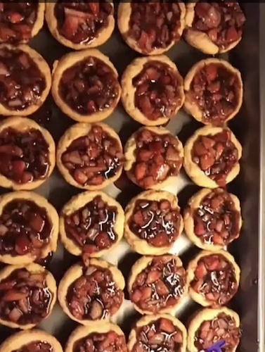

Mini Strawberry Tarts

Description
These are great for family gatherings or parties. All the sweet goodness of strawberry shortcake, but convenient
small
and individual servings for your guests. This very impressive looking treat will have all your guests begging
for the
recipe.
Preparation Time
Prep:30 mins
Cooking: 18 mins
Additional: 30 mins
Total: 1 hr 18 mins
Ingredient
- 2 (8 ounce) packages cream cheese, softened
- 2 cups butter
- 4 ½ cups all-purpose flour
- 3 (3 ounce) packages strawberry flavored Jell-O® mix
- 1 cup white sugar
- 3 drops red food coloring
- 3 ½ cups boiling water
- ¼ cup cornstarch
- ¼ cup water
- 3 pounds fresh strawberries, sliced
- 1 ½ cups whipped cream, or to taste (Optional)
Steps
- Preheat oven to 350 degrees F (175 degrees C). Lightly grease mini muffin pans.
- Place cream cheese and butter in a large bowl. Beat with an electric mixer until smooth and fluffy.
Gradually beat in
flour, one cup at a time, until all is incorporated. Roll dough into 70 small balls, and press each into a
mini muffin
pan cup to form the pastry crusts.
- Bake crusts in preheated oven until golden brown, 15 to 18 minutes. Remove from oven, and allow to cool.
- Stir gelatin, sugar, and food coloring into the boiling water. Place over high heat; bring back to a boil.
Stir together
cornstarch and water to make a paste. Stir the cornstarch mixture in the boiling gelatin until dissolved.
Remove from
heat and allow to cool completely, about 30 minutes.
- Spoon cooled gelatin mixture evenly into tart shells. Push a strawberry half down into each tart. If
desired, top each
tart with a small amount of whipped cream or whipped topping just before serving.